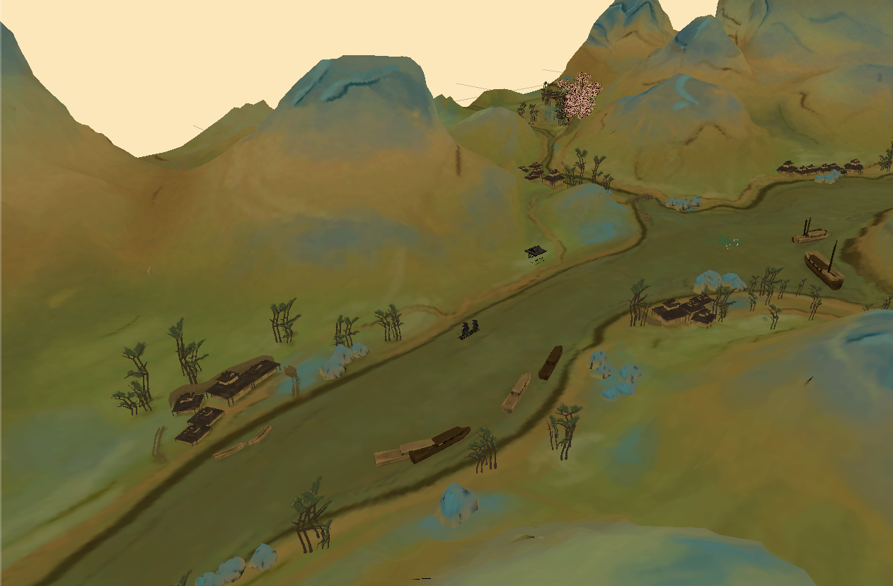

A Panorama of Rivers and Mountains
A Panorama of Rivers and Mountains is the lone surviving painting by Song Dynasty artist Wang Ximeng who is one of the most famous artists in China's fine art history.
It is stunning in its sweeping scale, rich coloration, and expressive minute details. On a single piece of silk, mountain formations and groupings of infinite variety rise and fall between a cloudless sky and rippling waters, extending as far as the eye can see in all directions. Punctuating the spectacular scene, thatched houses, bridges, and antlike figures are described in fine detail.
The 3D model is a masterpiece of a "blue-green landscape"(qinglü Shanshui). Azurite blue and malachite green dominate, with touches of pale brown. Brush strokes in this composition are subordinated to the colors.

